Candidate List 20260706Last night — ZTF: 2,750 passed basic cuts (86 young) · LSST: 4,279 passed basic cuts (630 young)Previous Day Next Day
Section 1: New Sources (age<1d) Section 2: Old (1-5d) sources observed last nightplaceholder
Section 1: New Afterglow/FBOT Cands Last Night (1)
1. [LSST] 170631029209432123 (FBOT?) [Back to Top] [Fritz Alert] [Fritz Source] [Lasair]RA, Dec: 211.18278, -7.08311 14h 4m43.87s, -7d-4m-59.21sGalactic (l, b): 332.98065, 51.46143 ext(g-r) = 0.032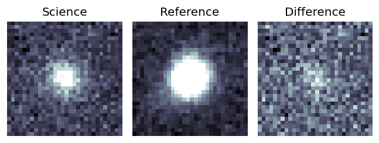
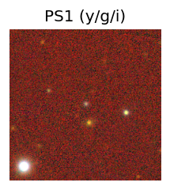
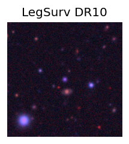
TESS: Sectors [ 91 115]
PS1: 0 sources in 3 arcsec
LegacySurvey: 1 sources in 3 arcsec Closest: d = 0.12 arcsec, 210.0 deg (east of north) photoz=0.72 (68% bounds 0.64, 0.81), type=DEV peak abs mag = -24.99 (68% bounds -24.69, -25.3)
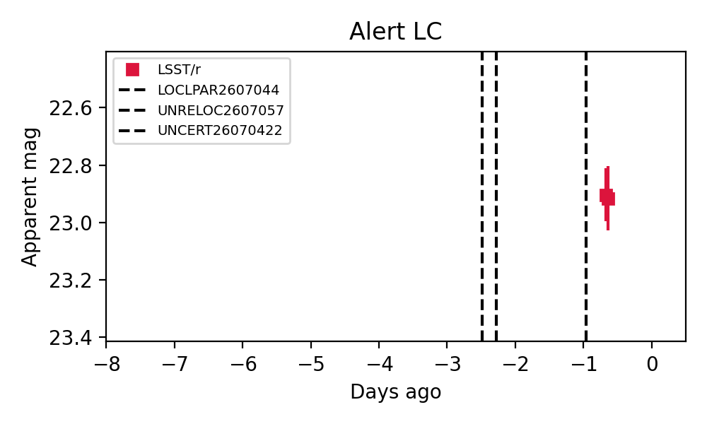
Extinction-corrected gr color:
From alerts: 0.09 +/- 99 mag
Rise Rate:
g: 0.29 mag/day
Fade Rate:
g: 0.0 mag/day
r: 0.0 mag/day
Section 2: Older Sources Observed Last Night (16)
0. [ZTF] ZTF26abekjzj (FBOT?) [Back to Top] [Share] [Trigger Swift] [Fritz Alert] [Fritz Source] [Lasair]RA, Dec: 239.90437, 7.85036 15h59m37.05s, 7d51m1.30sGalactic (l, b): 18.52519, 41.5335 ext(g-r) = 0.044


TESS: Sectors [ 51 117]
PS1: 0 sources in 3 arcsec
LegacySurvey: 1 sources in 3 arcsec Closest: d = 3.34 arcsec, 220.4 deg (east of north) photoz=0.12 (68% bounds 0.01, 0.68), type=PSF peak abs mag = -20.32 (68% bounds -15.56, -24.66)

Extinction-corrected gr color:
From alerts: -0.35 +/- 0.28 mag
Extinction-corrected gi color:
From alerts: -0.32 +/- 99 mag
Extinction-corrected ri color:
From alerts: -0.17 +/- 99 mag
Rise Rate:
g: 0.44 mag/day
r: 0.32 mag/day
i: 0.06 mag/day
Fade Rate:
g: 0.18 mag/day
r: 0.16 mag/day
i: 0.14 mag/day
1. [ZTF] ZTF26abemmvh (Afterglow?) [Back to Top] [Share] [Trigger Swift] [Fritz Alert] [Fritz Source] [Lasair]RA, Dec: 282.06094, 57.70769 18h48m14.63s, 57d42m27.70sGalactic (l, b): 87.43335, 23.08429 ext(g-r) = 0.067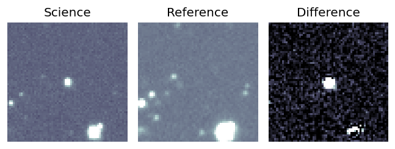
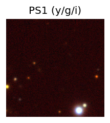
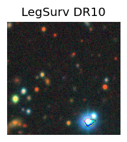
TESS: Sectors [ 15 16 17 18 19 20 21 22 23 24 26 40 41 47 48 49 50 51
52 53 54 55 56 57 58 59 60 73 74 75 76 77 78 79 80 81
81 82 83 84 86 117 118 119 120 121]
PS1: 0 sources in 3 arcsec
LegacySurvey: 1 sources in 3 arcsec Closest: d = 0.14 arcsec, 2.6 deg (east of north) photoz=1.12 (68% bounds 0.64, 1.4), type=PSF peak abs mag = -28.61 (68% bounds -27.12, -29.2)
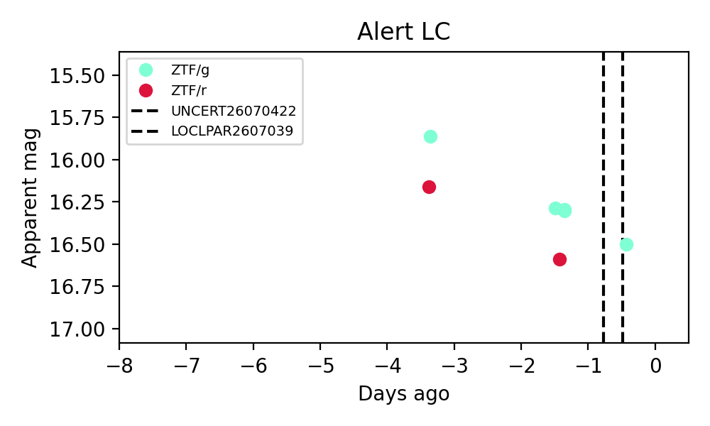
Extinction-corrected gr color:
From alerts: -0.36 +/- 0.04 mag
Rise Rate:
g: 0.7 mag/day
r: 0.58 mag/day
Fade Rate:
g: 0.22 mag/day
r: 0.15 mag/day
2. [LSST] 170604740547706903 (FBOT?) [Back to Top] [Fritz Alert] [Fritz Source] [Lasair]RA, Dec: 8.71118, -45.23557 0h34m50.68s, -45d-14m-8.04sGalactic (l, b): 312.21531, -71.5924 ext(g-r) = 0.01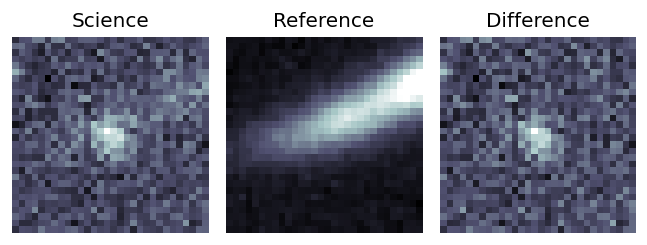

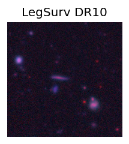
TESS: Sectors [ 2 29 96 103 104 105]
PS1: 0 sources in 3 arcsec
LegacySurvey: 1 sources in 3 arcsec Closest: d = 0.83 arcsec, 285.9 deg (east of north) photoz=0.25 (68% bounds 0.12, 0.46), type=EXP peak abs mag = -19.92 (68% bounds -18.07, -21.46)
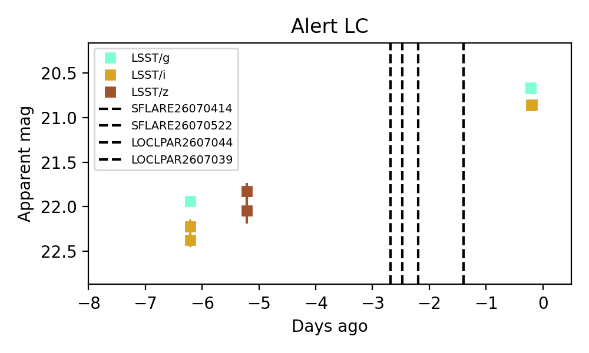
Extinction-corrected gi color:
From alerts: -0.2 +/- 0.02 mag
Rise Rate:
g: 0.21 mag/day
i: 0.24 mag/day
Fade Rate:
3. [ZTF] ZTF26abemkvx (Afterglow?) (TNS: 2) [Back to Top] [Share] [Trigger Swift] [Fritz Alert] [Fritz Source] [Lasair]RA, Dec: 289.2679, 46.38841 19h17m4.30s, 46d23m18.26sGalactic (l, b): 77.6813, 15.16671 ext(g-r) = 0.098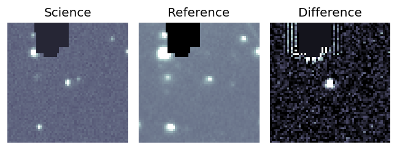
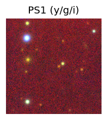

TESS: Sectors [ 14 15 40 41 53 54 55 74 75 80 82 119 120]
PS1: 0 sources in 3 arcsec
LegacySurvey: 0 sources in 3 arcsec
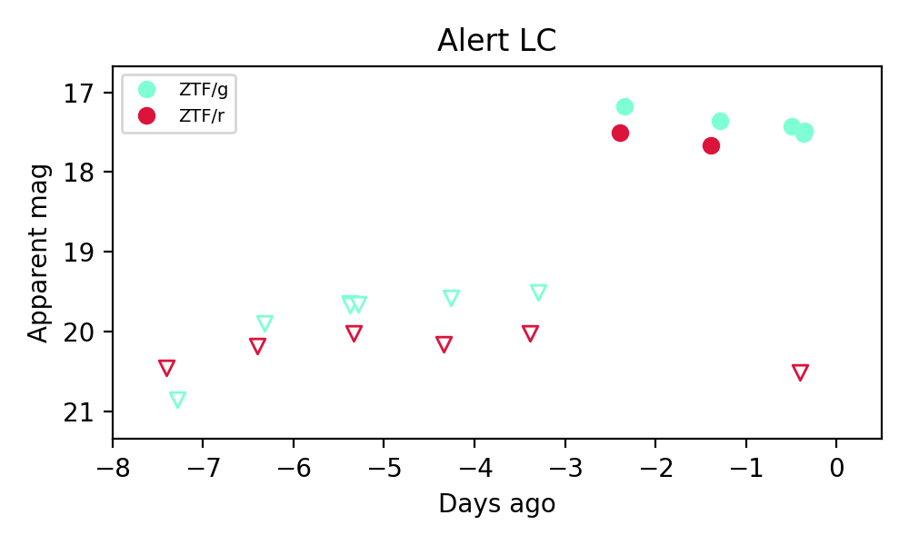
Extinction-corrected gr color:
From alerts: -0.47 +/- 0.09 mag
Rise Rate:
r: 2.53 mag/day
Fade Rate:
g: 0.15 mag/day
r: 2.89 mag/day
4. [ZTF] ZTF26abeoyps (Afterglow?FBOT?) [Back to Top] [Share] [Trigger Swift] [Fritz Alert] [Fritz Source] [Lasair]RA, Dec: 291.16072, 50.75532 19h24m38.57s, 50d45m19.16sGalactic (l, b): 82.3524, 15.77423 ext(g-r) = 0.099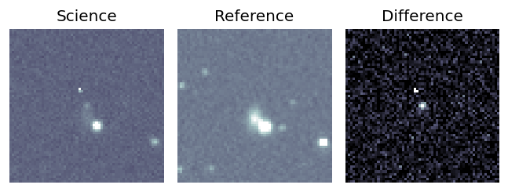
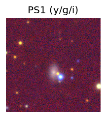

TESS: Sectors [ 14 15 54 55 56 74 75 76 80 81 82 83 119 120]
PS1: 1 source in 3 arcsec Closest: d = 5.14 arcsec photoz=0.13+/-0.01 peak abs mag = -20.13
LegacySurvey: 0 sources in 3 arcsec
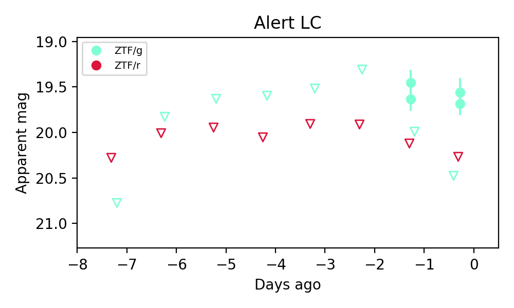
Extinction-corrected gr color:
From alerts: 1.48 +/- 99 mag
Rise Rate:
g: 6.57 mag/day
r: 1.43 mag/day
Fade Rate:
g: 7.01 mag/day
r: 70.41 mag/day
5. [ZTF] ZTF26abepwdg (Afterglow?FBOT?) [Back to Top] [Share] [Trigger Swift] [Fritz Alert] [Fritz Source] [Lasair]RA, Dec: 17.0528, 15.82911 1h 8m12.67s, 15d49m44.78sGalactic (l, b): 128.83601, -46.85027 ext(g-r) = 0.101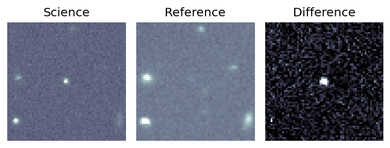
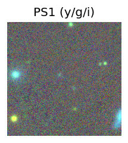
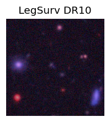
TESS: Sectors [17 42 43 57 70 84]
SDSS (<15 kpc):Found SDSS phot-z: z=0.37; peak abs mag = -23.96
PS1: 0 sources in 3 arcsec
LegacySurvey: 1 sources in 3 arcsec Closest: d = 0.99 arcsec, 85.1 deg (east of north) photoz=1.41 (68% bounds 0.97, 2.12), type=PSF peak abs mag = -27.31 (68% bounds -26.29, -28.39)
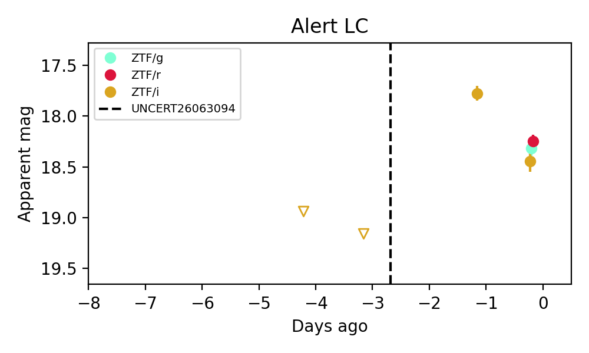
Extinction-corrected gr color:
From alerts: 0.35 +/- 0.2 mag
Extinction-corrected gi color:
From alerts: -0.28 +/- 0.13 mag
Extinction-corrected ri color:
From alerts: -0.25 +/- 0.12 mag
Consistent with synchrotron, g-r>0!
Rise Rate:
r: 0.21 mag/day
i: 0.69 mag/day
Fade Rate:
g: 0.49 mag/day
r: 0.33 mag/day
i: 0.72 mag/day
6. [ZTF] ZTF26abeqtrl (FBOT?) [Back to Top] [Share] [Trigger Swift] [Fritz Alert] [Fritz Source] [Lasair]RA, Dec: 249.82341, 34.02119 16h39m17.62s, 34d 1m16.28sGalactic (l, b): 55.72006, 41.0916 ext(g-r) = 0.023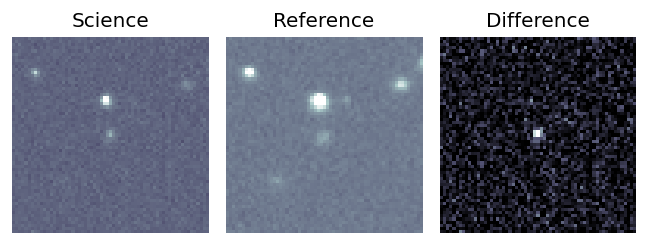
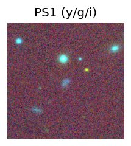
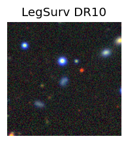
TESS: Sectors [ 24 25 51 52 78 79 117]
SDSS (<15 kpc):Found SDSS phot-z: z=0.25; peak abs mag = -21.69
PS1: 0 sources in 3 arcsec
LegacySurvey: 1 sources in 3 arcsec Closest: d = 1.40 arcsec, 174.4 deg (east of north) photoz=0.05 (68% bounds 0.02, 0.09), type=SER peak abs mag = -17.7 (68% bounds -15.66, -19.18)
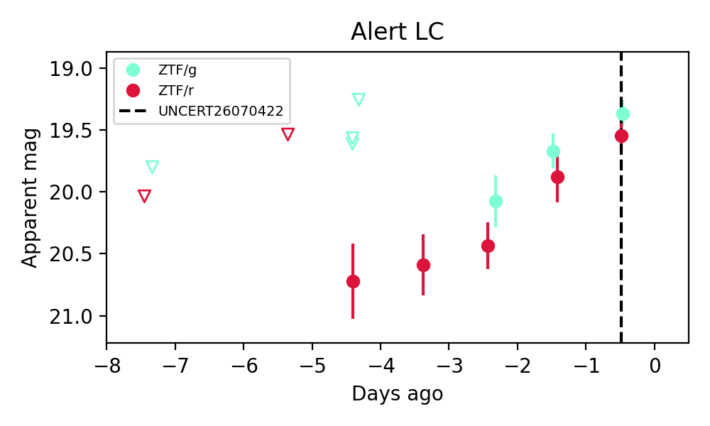
Extinction-corrected gr color:
From alerts: -0.16 +/- 0.14 mag
Rise Rate:
g: 0.26 mag/day
r: 0.3 mag/day
Fade Rate:
7. [ZTF] ZTF26abewstc (Afterglow?) [Back to Top] [Share] [Trigger Swift] [Fritz Alert] [Fritz Source] [Lasair]RA, Dec: 300.66415, -25.5643 20h 2m39.39s, -25d-33m-51.48sGalactic (l, b): 16.19568, -26.2482 ext(g-r) = 0.122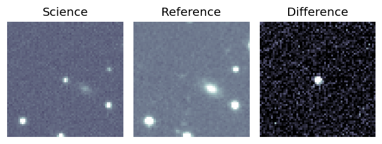
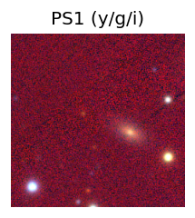
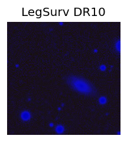
TESS: Sectors 116
PS1: 0 sources in 3 arcsec
LegacySurvey: 0 sources in 3 arcsec
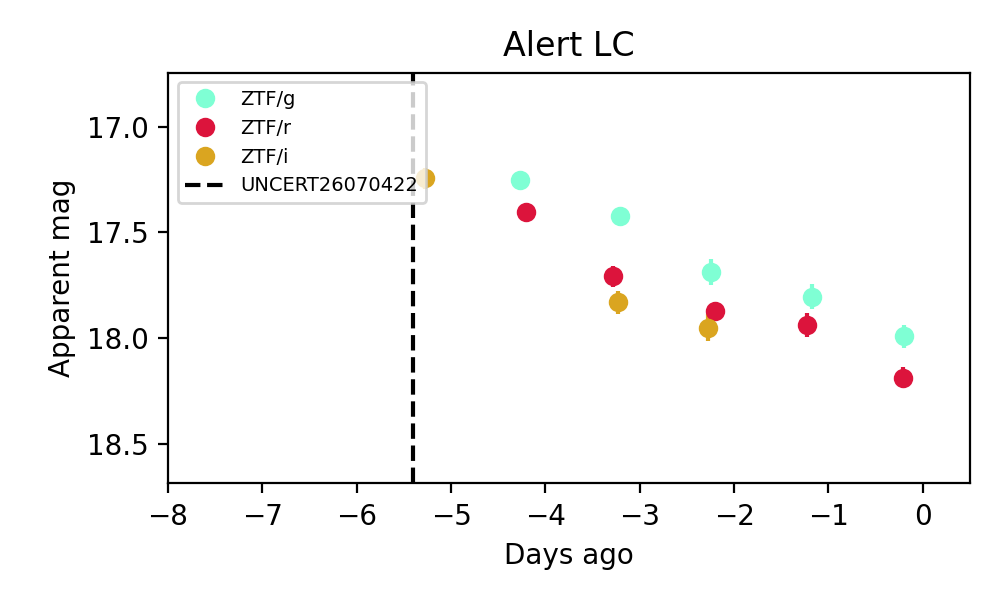
Extinction-corrected gr color:
From alerts: -0.41 +/- 0.07 mag
Extinction-corrected gi color:
From alerts: -0.59 +/- 0.07 mag
Extinction-corrected ri color:
From alerts: -0.19 +/- 0.07 mag
Rise Rate:
g: 0.27 mag/day
r: 0.3 mag/day
i: 0.32 mag/day
Fade Rate:
g: 0.16 mag/day
r: 0.33 mag/day
i: 0.29 mag/day
8. [ZTF] ZTF26abeyoqo (Afterglow?) [Back to Top] [Share] [Trigger Swift] [Fritz Alert] [Fritz Source] [Lasair]RA, Dec: 281.00648, 5.58208 18h44m1.56s, 5d34m55.50sGalactic (l, b): 37.06588, 4.18608 ext(g-r) = 1.108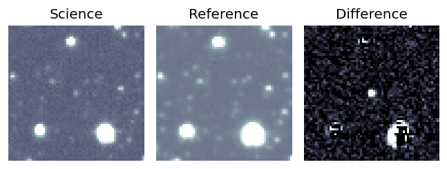
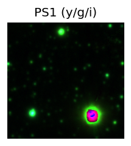

TESS: Sectors 80
PS1: 1 source in 3 arcsec Closest: d = 3.35 arcsec photoz=0.58+/-0.43 peak abs mag = -25.91
LegacySurvey: 0 sources in 3 arcsec
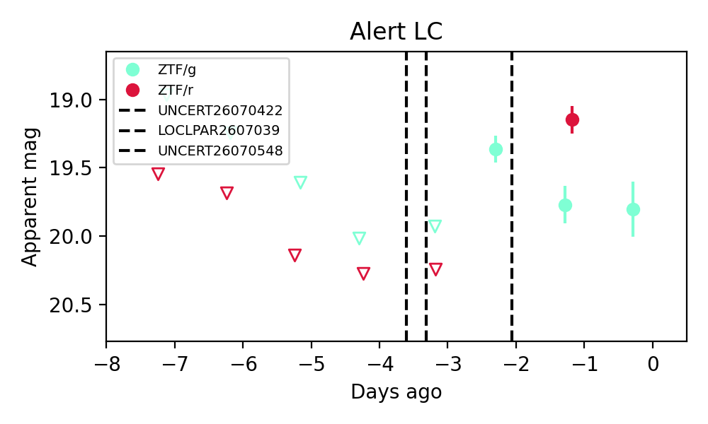
Extinction-corrected gr color:
From alerts: -0.49 +/- 0.17 mag
Rise Rate:
g: 0.63 mag/day
r: 0.55 mag/day
Fade Rate:
g: 0.4 mag/day
9. [ZTF] ZTF26abfcjxc (FBOT?) [Back to Top] [Share] [Trigger Swift] [Fritz Alert] [Fritz Source] [Lasair]RA, Dec: 145.91149, 47.86987 9h43m38.76s, 47d52m11.53sGalactic (l, b): 170.30215, 48.22186 ext(g-r) = 0.013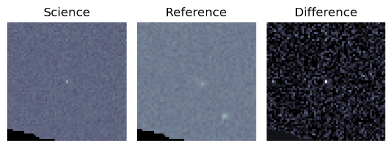
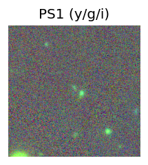
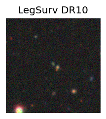
TESS: Sectors [21 48]
SDSS (<15 kpc):Found SDSS phot-z: z=0.35; peak abs mag = -22.05
PS1: 0 sources in 3 arcsec
LegacySurvey: 1 sources in 3 arcsec Closest: d = 1.15 arcsec, 1.3 deg (east of north) photoz=0.42 (68% bounds 0.33, 0.49), type=EXP peak abs mag = -22.47 (68% bounds -21.9, -22.89)
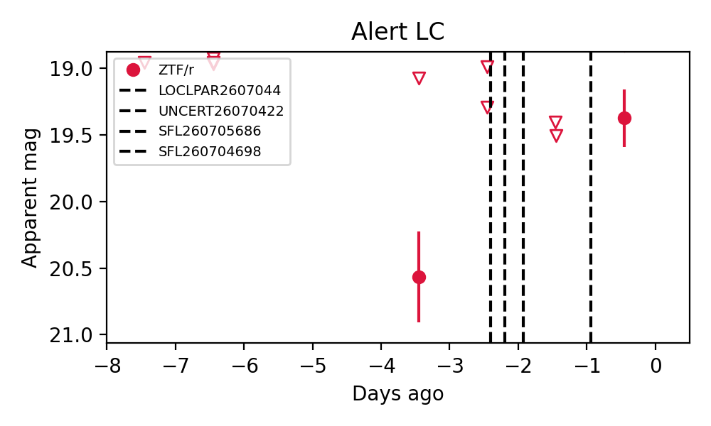
Rise Rate:
r: 0.4 mag/day
Fade Rate:
10. [ZTF] ZTF26abfcugw (FBOT?) [Back to Top] [Share] [Trigger Swift] [Fritz Alert] [Fritz Source] [Lasair]RA, Dec: 213.98837, 8.61084 14h15m57.21s, 8d36m39.01sGalactic (l, b): 354.06099, 62.75653 ext(g-r) = 0.031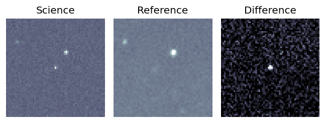
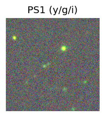
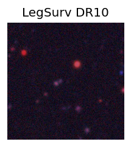
TESS: Sectors 50
SDSS (<15 kpc):Found SDSS phot-z: z=0.44; peak abs mag = -22.76
PS1: 0 sources in 3 arcsec
LegacySurvey: 1 sources in 3 arcsec Closest: d = 1.37 arcsec, 245.8 deg (east of north) photoz=0.63 (68% bounds 0.46, 1.0), type=REX peak abs mag = -23.62 (68% bounds -22.82, -24.87)
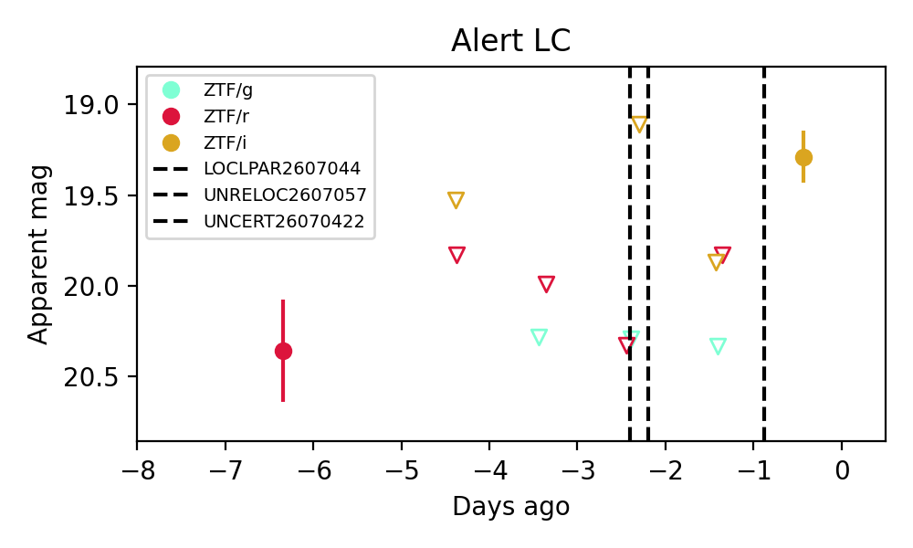
Rise Rate:
i: 0.58 mag/day
Fade Rate:
11. [ZTF] ZTF26abfcwzr (Afterglow?) [Back to Top] [Share] [Trigger Swift] [Fritz Alert] [Fritz Source] [Lasair]RA, Dec: 220.90111, -4.10466 14h43m36.27s, -4d-6m-16.79sGalactic (l, b): 348.16387, 48.66453 ext(g-r) = 0.097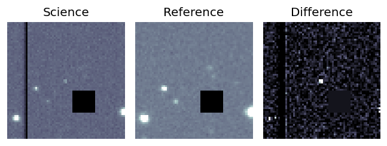
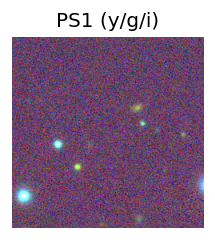
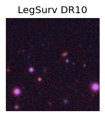
TESS: Sectors [ 51 91 115]
PS1: 0 sources in 3 arcsec
LegacySurvey: 1 sources in 3 arcsec Closest: d = 3.90 arcsec, 288.9 deg (east of north) photoz=0.9 (68% bounds 0.52, 1.4), type=REX peak abs mag = -27.32 (68% bounds -25.88, -28.51)
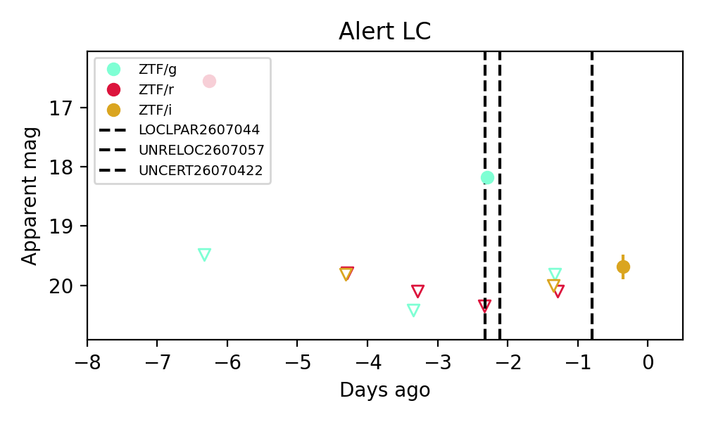
Extinction-corrected gr color:
From alerts: -2.27 +/- 99 mag
Rise Rate:
g: 2.12 mag/day
r: 1.4 mag/day
Fade Rate:
g: 1.7 mag/day
r: 1.65 mag/day
12. [ZTF] ZTF26abfebgc (FBOT?) [Back to Top] [Share] [Trigger Swift] [Fritz Alert] [Fritz Source] [Lasair]RA, Dec: 223.80672, 32.83884 14h55m13.61s, 32d50m19.82sGalactic (l, b): 52.55429, 62.69609 ext(g-r) = 0.02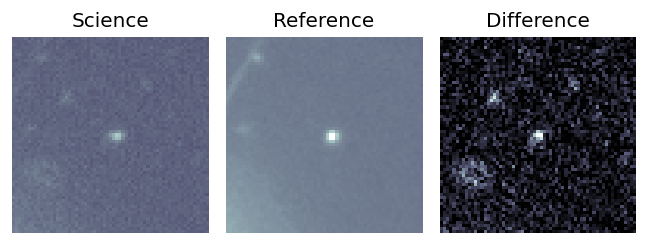
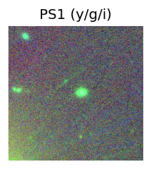
TESS: Sectors [23 24 50 51 77]
SDSS (<15 kpc):Found SDSS phot-z: z=0.79; peak abs mag = -24.04
PS1: 0 sources in 3 arcsec
LegacySurvey: 1 sources in 3 arcsec Closest: d = 2.48 arcsec, 271.2 deg (east of north) photoz=0.16 (68% bounds 0.12, 0.2), type=SER peak abs mag = -19.97 (68% bounds -19.23, -20.42)
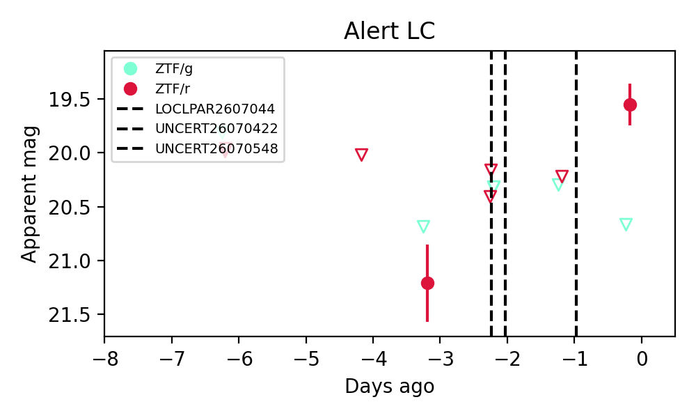
Extinction-corrected gr color:
From alerts: 1.1 +/- 99 mag
Rise Rate:
r: 0.66 mag/day
Fade Rate:
13. [ZTF] ZTF26abfeieg (Afterglow?) [Back to Top] [Share] [Trigger Swift] [Fritz Alert] [Fritz Source] [Lasair]RA, Dec: 286.29509, 30.44911 19h 5m10.82s, 30d26m56.79sGalactic (l, b): 61.80847, 10.66708 ext(g-r) = 0.171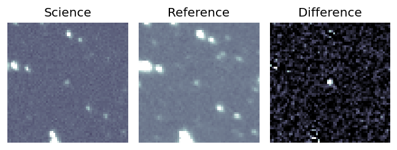
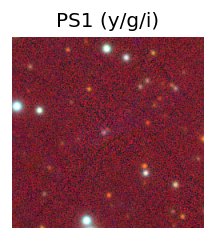
TESS: Sectors [14 40 53 54 74 80 81]
PS1: 1 source in 3 arcsec Closest: d = 1.52 arcsec photoz=0.70+/-0.19 peak abs mag = -24.72
LegacySurvey: 0 sources in 3 arcsec
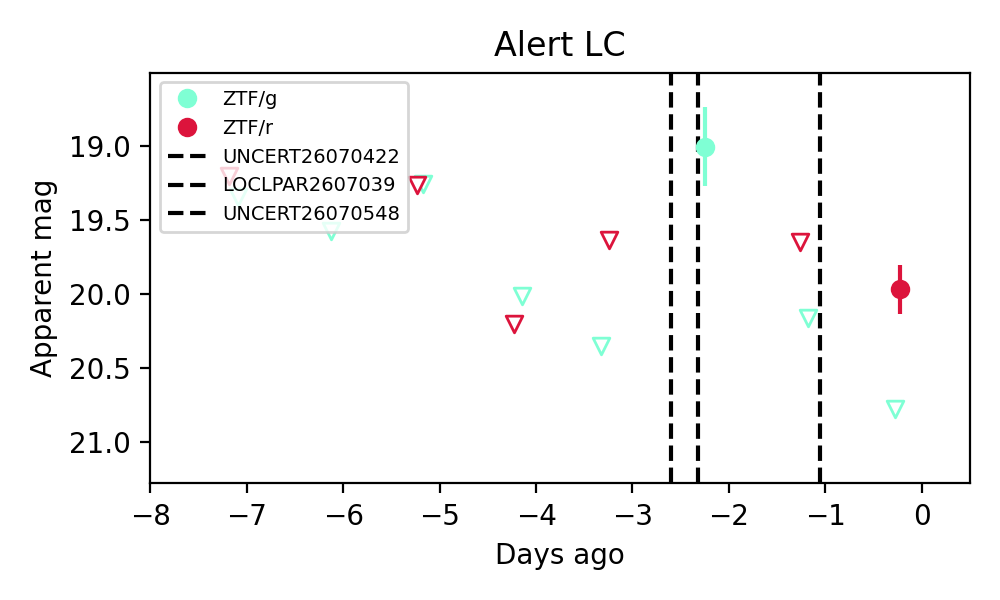
Extinction-corrected gr color:
From alerts: 0.64 +/- 99 mag
Rise Rate:
g: 1.24 mag/day
r: 0.05 mag/day
Fade Rate:
g: 1.09 mag/day
14. [ZTF] ZTF26abfeoxv (FBOT?) [Back to Top] [Share] [Trigger Swift] [Fritz Alert] [Fritz Source] [Lasair]RA, Dec: 296.95582, 73.15769 19h47m49.40s, 73d 9m27.70sGalactic (l, b): 105.29685, 21.93912 ext(g-r) = 0.217
TESS: Sectors [ 14 15 16 17 18 19 20 21 22 23 24 25 26 40 41 47 48 49
50 51 52 53 54 55 56 57 58 59 60 73 74 75 76 77 79 80
81 82 83 84 85 86 117 118 119 120 121]
PS1: 1 source in 3 arcsec Closest: d = 0.75 arcsec photoz=0.27+/-0.10 peak abs mag = -21.26
LegacySurvey: 0 sources in 3 arcsec
Extinction-corrected gr color:
From alerts: 0.05 +/- 0.27 mag
Consistent with synchrotron, g-r>0!
Rise Rate:
r: 0.21 mag/day
Fade Rate:
15. [ZTF] ZTF26abfesie (Afterglow?) [Back to Top] [Share] [Trigger Swift] [Fritz Alert] [Fritz Source] [Lasair]RA, Dec: 282.88602, 48.61645 18h51m32.64s, 48d36m59.21sGalactic (l, b): 78.22517, 19.98978 ext(g-r) = 0.079
TESS: Sectors [ 14 15 40 41 53 54 55 75 80 81 82 118 119 120]
PS1: 0 sources in 3 arcsec
LegacySurvey: 1 sources in 3 arcsec Closest: d = 0.48 arcsec, 154.1 deg (east of north) photoz=0.56 (68% bounds 0.28, 0.75), type=REX peak abs mag = -22.69 (68% bounds -20.94, -23.45)
Extinction-corrected gr color:
From alerts: 0.43 +/- 99 mag
Rise Rate:
r: 0.03 mag/day
Fade Rate:
g: 0.21 mag/day